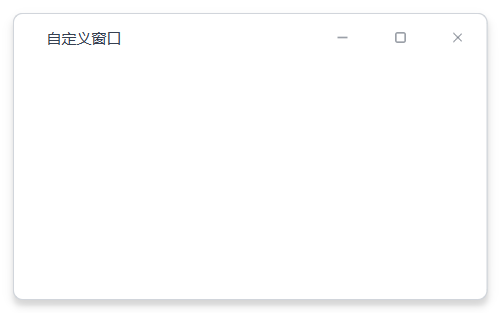

Window 自定义窗口与标题栏¶
用于构建桌面应用的自定义无边框窗口和精美标题栏。支持多种现代化预设风格、边缘拉伸缩放、圆角效果和窗口阴影。 此外，窗口内置了强大的标题栏扩展功能 (Titlebar Extras)，允许开发者通过一行代码，直接在标题栏嵌入前进后退历史导航按钮和账户头像下拉菜单。
MkWindow 无边框窗口¶
MkWindow 继承自 QMainWindow。当使用自定义标题栏时，它会自动去除系统原生边框，添加漂亮的阴影和圆角，并支持通过鼠标拖动窗口边缘进行缩放。
基础用法¶

from PySide6.QtWidgets import QLabel
from monkeyqt import MkWindow
# 创建一个使用自定义标题栏和 'shadcn' 预设风格的窗口
window = MkWindow(use_custom_title_bar=True, preset="shadcn")
window.setWindowTitle("我的现代化应用")
# 设置中心窗口组件
label = QLabel("中心内容区")
window.setCentralWidget(label)
window.resize(800, 600)
标题栏扩展：头像菜单与历史导航 (Titlebar Extras)¶
MonkeyQt 提供了一键式启用账户管理与历史导航的 API：enable_titlebar_extras()。它能够：
1. 自动感知内容区：自动检测中心控件下的 QStackedWidget，若不是带动画的版本，会自动升级为具有水平滑动转场效果的 MkAnimatedStackedWidget。
2. 前进/后退追踪：自动捕获 QStackedWidget 中各个页面的切换历史，控制按钮的可用状态（Enabled/Disabled）。
3. 支持极简仅图标模式：如果觉得默认的按钮背景比较重，可以开启 nav_icon_only=True，这样按钮的所有状态背景都是透明的，只留出极简的 carets 图标，非常精致。
4. 适配 68 种主题样式：组件的渲染完全基于 ThemeEngine 的 token 变化而实时重绘刷新。
API 属性与方法¶
MkWindow 构造函数¶
| 参数 | 类型 | 默认值 | 说明 |
|---|---|---|---|
use_custom_title_bar |
bool |
True |
是否使用自定义无边框标题栏。为 False 时回退为系统原生窗口 |
preset |
str |
"default" |
自定义标题栏的主题预设风格（"default", "shadcn", "ida", "sunlogin", "soda", "antigravity"） |
sidebar_full_height |
bool |
False |
是否允许左侧的 MkMenu 侧边栏高度撑满整个窗口（即标题栏在侧边栏右侧开始，类似 汽水音乐 布局） |
MkWindow 核心方法¶
| 方法名 | 参数 | 返回值 | 说明 |
|---|---|---|---|
setCentralWidget(widget) |
QWidget |
None |
设置中心控件。在无边框模式下，该控件会自动填充标题栏下方的全部空间 |
setWindowTitle(title) |
str |
None |
设置窗口标题，并自动同步更新自定义标题栏的文本 |
setWindowIcon(icon) |
QIcon |
None |
设置窗口图标，并自动同步缩放渲染在标题栏最左侧 |
set_preset(preset) |
str |
None |
动态更改标题栏和窗口容器的主题预设 |
enable_titlebar_extras(...) |
(详见下表) | None |
一键开启标题栏头像和前进后退导航 |
disable_titlebar_extras() |
None |
None |
彻底移除头像和前进后退导航组件并清理状态 |
enable_titlebar_extras 方法参数¶
enable_titlebar_extras(
avatar=True,
history_nav=True,
user_name="",
subtitle="",
avatar_image="",
avatar_size=32,
avatar_actions=None,
animation_duration=280,
stack=None,
nav_icon_only=False
)
| 参数 | 类型 | 默认值 | 说明 |
|---|---|---|---|
avatar |
bool |
True |
是否在标题栏右侧显示可点击头像菜单 |
history_nav |
bool |
True |
是否在标题栏显示前进后退按钮 |
user_name |
str |
"" |
账户下拉菜单中顶部显示的用户名 |
subtitle |
str |
"" |
用户名下方显示的副标题/个性签名 |
avatar_image |
str |
"" |
头像图片的本地文件路径 |
avatar_size |
int |
32 |
头像显示的宽度与高度像素大小 |
avatar_actions |
list[dict] |
None |
菜单中的操作项列表。如果为 None，默认显示：个人主页、系统设置。每项包含 id、text、icon 等键值 |
animation_duration |
int |
280 |
内容页进行滑动切换时的动画持续时间（毫秒） |
stack |
QStackedWidget |
None |
显式指定要绑定的堆叠控件。如果为 None，会在中心组件下自动遍历查找并绑定 |
nav_icon_only |
bool |
False |
设置为 True 时，前进后退按钮彻底去除矩形背景框与悬浮底色，只展示纯图标，实现最简极现代视觉效果 |
最佳实践与双向状态同步¶
在同时使用侧边栏菜单（MkMenu）与历史导航（前进后退）时，我们需要实现双向同步：
- 点击侧边栏 $\rightarrow$ 历史导航记录页面，并切换页面。
- 点击历史导航（前进/后退）或头像菜单 $\rightarrow$ 侧边栏菜单的高亮选中状态自动随之更新（并在跳转到隐藏页面时自动清空选中状态）。
以下提供了一个完整运行的最佳实践示例代码：
import sys
import os
from PySide6.QtWidgets import QApplication, QWidget, QVBoxLayout, QHBoxLayout, QLabel, QStackedWidget
from PySide6.QtCore import Qt
from monkeyqt import MkWindow, MkMenu, MkMessage, use_theme
class ModernAppDemo(MkWindow):
def __init__(self):
super().__init__(
use_custom_title_bar=True,
preset="default",
sidebar_full_height=True, # 侧边栏全高
)
self.setWindowTitle("导航同步与极简按钮测试")
self.resize(1100, 750)
# 1. 左右侧主要布局
self.central_widget = QWidget()
self.main_layout = QHBoxLayout(self.central_widget)
self.main_layout.setContentsMargins(0, 0, 0, 0)
self.main_layout.setSpacing(0)
# 2. 侧边栏初始化
self.sidebar = MkMenu(title="我的应用", collapse_mode="hamburger")
self.sidebar.add_item("home", "首页大厅", icon="house")
self.sidebar.add_item("data", "统计看板", icon="chart-bar")
self.sidebar.add_item("settings", "配置中心", icon="gear")
self.main_layout.addWidget(self.sidebar)
# 3. 内容展示区 (QStackedWidget)
self.right_widget = QWidget()
self.right_layout = QVBoxLayout(self.right_widget)
self.right_layout.setContentsMargins(20, 20, 20, 20)
self.content_area = QStackedWidget()
# 创建各个内容页面并设置 ObjectName（使 enable_titlebar_extras 能够正确映射）
self.page_home = self._create_page("🏠 这里是主页大厅", "#409eff")
self.page_data = self._create_page("📊 统计看板详情数据", "#67c23a")
self.page_settings = self._create_page("⚙️ 应用程序系统设置", "#e6a23c")
self.page_profile = self._create_page("👤 个人中心（模拟假数据）", "#5b8ff9")
self.page_home.setObjectName("home")
self.page_data.setObjectName("data")
self.page_settings.setObjectName("settings")
self.page_profile.setObjectName("profile")
self.content_area.addWidget(self.page_home)
self.content_area.addWidget(self.page_data)
self.content_area.addWidget(self.page_settings)
self.content_area.addWidget(self.page_profile)
self.right_layout.addWidget(self.content_area, stretch=1)
self.main_layout.addWidget(self.right_widget, stretch=1)
self.setCentralWidget(self.central_widget)
# 4. 一键启用标题栏扩展（隐藏背景，仅图标模式）
self.enable_titlebar_extras(
avatar=True,
history_nav=True,
user_name="落花不写码",
subtitle="PySide6 开发者",
nav_icon_only=True, # 启用无底色纯图标模式
avatar_actions=[
{"id": "profile", "text": "个人主页", "icon": "user"},
{"id": "logout", "text": "安全登出", "icon": "sign-out", "separator_before": True},
]
)
# 5. 连接信号
self.sidebar.itemClicked.connect(self.on_menu_clicked)
if self.titlebar_avatar:
self.titlebar_avatar.actionTriggered.connect(self._on_avatar_action)
if self.titlebar_history_nav:
# 监听历史导航页的切换，同步高亮侧边栏
self.titlebar_history_nav.pageChanged.connect(self._on_page_changed)
# 默认高亮第一项
self.sidebar.set_active("home")
def on_menu_clicked(self, item_id):
"""点击侧边栏菜单切换页面，并记入历史轨迹"""
if self.titlebar_history_nav:
self.titlebar_history_nav.navigate(item_id)
def _on_page_changed(self, page_id):
"""前进后退按钮被触发时，同步侧边栏菜单状态"""
found = False
for item in self.sidebar._all_items:
if item.item_id == page_id:
item.setChecked(True)
for other in self.sidebar._all_items:
if other != item:
other.setChecked(False)
found = True
break
if not found:
# 切换到了不在侧边栏中的界面（如个人主页），清除侧边栏的所有选中状态
for item in self.sidebar._all_items:
item.setChecked(False)
def _on_avatar_action(self, action_id):
"""处理头像菜单选择"""
if action_id == "profile":
if self.titlebar_history_nav:
self.titlebar_history_nav.navigate("profile")
elif action_id == "logout":
MkMessage.success(self, "已安全登出账户")
def _create_page(self, text, color):
page = QWidget()
lay = QVBoxLayout(page)
lbl = QLabel(text)
lbl.setStyleSheet(f"color: {color}; font-size: 24px; font-weight: bold;")
lbl.setAlignment(Qt.AlignCenter)
lay.addWidget(lbl)
return page
if __name__ == "__main__":
app = QApplication(sys.argv)
use_theme("默认")
window = ModernAppDemo()
window.show()
sys.exit(app.exec())